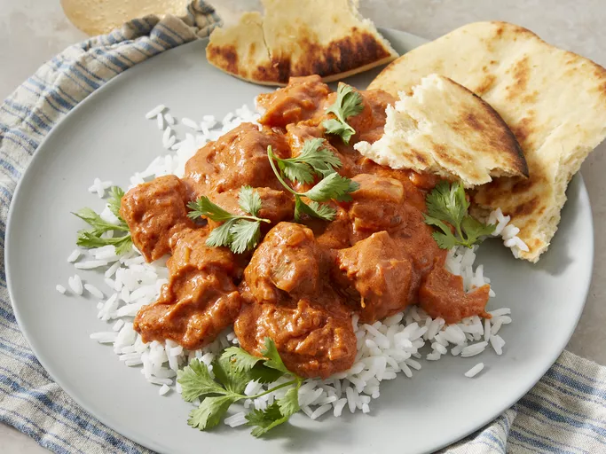

Home
Chicken Makhani

The Butter Chicken recipe, or the Chicken Makhani, features a full-flavoured sauce that complements the chicken well, made as mild or spicy as you wish. Serve it with basmati rice and naan bread.
Why you'll love this recipe!
Tender boneless chicken thighs simmer in a rich sauce of spices and tomato puree.
Home cooks praise the ability to control the heat level by adjusting the amount of cayenne pepper.
Ingredients:
- 2 tablespoons peanut oil, divided
- 1 shallot, finely chopped
- 1/4 white onion, chopped
- 2 tablespoons butter
- 1 tablespoon ginger garlic paste
- 2 tablespoons lemon juice
- 2 tablespoons garam masala, divided
- 1 teaspoon chili powder
- 1 teaspoon ground cumin
- 1 bay leaf
- 1 cup tomato puree
- 1 cup half-and-half
- 1/4 cup plain yogurt
- 1 pinch salt and ground black pepper to taste
- 1 pound boneless, skinless chicken thighs, cut into size pieces
- 1/4 teaspoon cayenne pepper, or to taste
- 1 tablespoon cornstarch
- 1/4 cup water
Steps:
-
Heat 1 tablespoon oil in a large saucepan over medium-high heat. Sauté shallot and onion until soft and translucent, about 5 minutes.
-
Stir in butter, ginger-garlic paste, lemon juice, 1 teaspoon garam masala, chili powder, cumin, and bay leaf. Cook and stir for 1 minute. Add tomato sauce, and cook for 2 minutes, continuing to frequently stir.
-
Stir in half-and-half and yogurt. Reduce heat to low, and simmer for 10 minutes, frequently stirring. Season with salt and pepper. Remove the heat and set aside.
-
Heat remaining 1 tablespoon oil in a large heavy skillet over medium heat. Cook chicken until lightly browned, about 10 minutes.
-
Reduce heat, season with remaining 1 teaspoon garam masala and cayenne. Stir in a few spoonfuls of sauce, and simmer until liquid has reduced, and chicken is no longer pink. Add cooked chicken into sauce and stir together.
-
Dissolve cornstarch into water, then mix into the sauce. Cook for 5 to 10 minutes, or until thickened.
-
Serve over rice with naan.